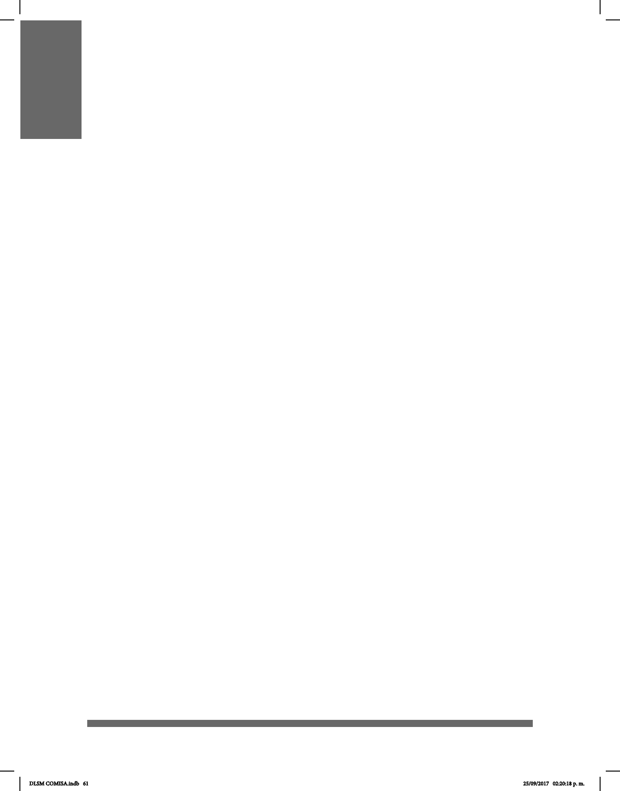

61
GRAMÁTICA DE LA LENGUA
DE SEÑAS MEXICANA
Según la Real Academia Española (RAE), la gramática explica la forma en que los
elementos de la lengua se enlazan para formar discursos y analiza los signicados de
estas combinaciones. En la lengua de señas la gramática se estructura a partir del
espacio y el movimiento.
La Lengua de Señas Mexicana (LSM) se estructura mediante el uso del cuerpo en el
espacio. Dentro de este espacio proyectado existen tres límites: el vertical, el horizontal y
un tercero que indica la proximidad de las manos con respecto al cuerpo.
El límite vertical va de la cintura a la coronilla de la cabeza; el límite horizontal, hasta la
altura de los codos, con los brazos doblados.
Cualquier movimiento que sobrepase estas dimensiones será interpretado como
exageración o énfasis.
DLSM COMISA.indb 61 25/09/2017 02:20:18 p. m.